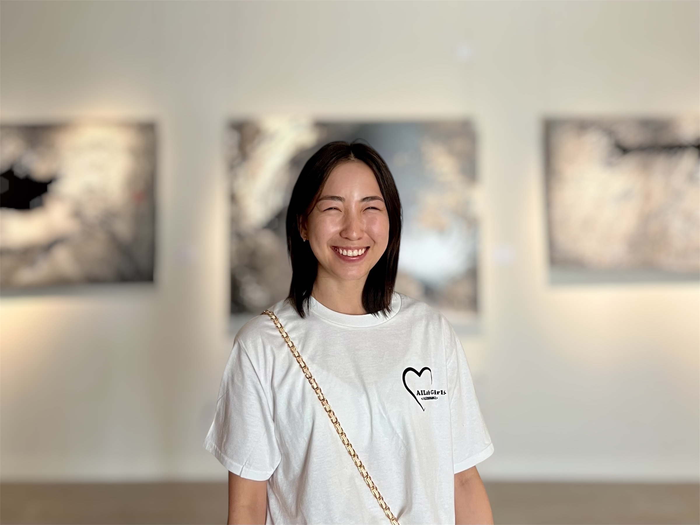

I am an MSc graduate and AI engineer with a research focus on alignment and fairness challenges in state-of-the-art LLMs. Specifically, my main interest is understanding how state-of-the-art multilingual models internally represent alignment and fairness-related concepts and whether these representations are universal, language-specific, or both, and how mechanistic interpretability tools can help us understand and mitigate the underlying issues.
My path into this area began in software engineering, where I was fortunate enough to meet my undergraduate supervisor, Khuyagbaatar, who encouraged me to pursue NLP more deeply and supported my application to the prestigious Language and Communication Technologies program, which is a double master's degree that became the foundation of my research journey. In my second year, a software project course taught by DFKI researchers introduced me to mechanistic interpretability, where I explored key tools and read Anthropic's work on scaling monosemanticity, which led me to propose a thesis grounded in this framework. My thesis supervisors welcomed the idea, and together with my daily supervisor Koel, we carried out a project which we eventually submitted to the MRL workshop at EMNLP 2025 in Suzhou, China, where it received the Best Paper Award.
Since then, we have stayed in touch, and we are currently investigating stereotype bias, spanning gender, age, sexual orientation, physical appearance, and more, across multiple model families and languages, asking to what extent these biases are represented universally versus language-dependently, and whether the patterns hold consistently across different architectures. This work is currently under review at CoLM 2026.
I am now seeking a PhD position where I can extend this line of exploration into projects that are meaningful for both academia and industry, ideally within a research environment with strong expertise in mechanistic interpretability, AI fairness, alignment, and safety.